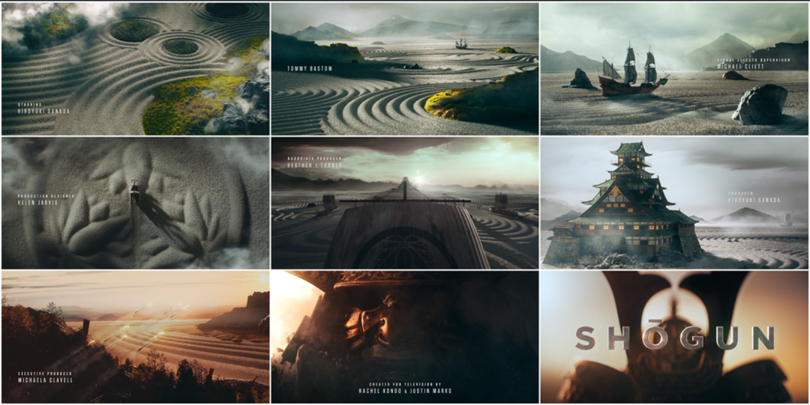
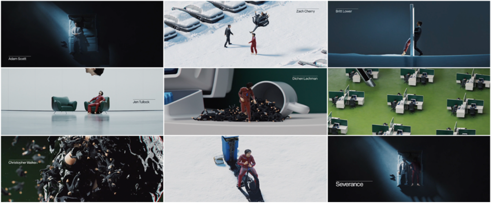

BREAKING BAD TRUE DETECTIVE-INTRO
HVA ER AFTER EFFECT'S & PHOTOSHOP?
After Effect's:
Adobe After Effects er et program for å lage animasjoner, visuelle effekter og beveglesegrafikk. Kort
forklart det brukes til å sette sammen lag med video tekst, bilder og effekter, som at du kan skape alt
fra tittelsekvenser til komplekse VFX, her er noen av funskjonene After Effects tilbyr:
-
Tidslinje og lag
Hver komposisjon i After Effects består av flere lag, også kjent som layers. Disse kan være videoklipp, bilder, tekst eller former. Lagene stables oppå hverandre, og du styrer synligheten, posisjon, ocapicity (gjennomsiktighet) osv.
-
Effekter og forvregninger
Du kan legge på undervis av innebygde effekter (fargekorrigeringer, blur, glød, forvrengninger osv.) På et hvilket som helst lag. Hver effekt har parametere du kan animere (sette keyframes), for eksempel å justere styrken av en glød fra 0 til 100% over noen sekunder.
-
Nøkkelbilder (keyframes)
For å animere t.eks. posisjon, rotasjon, skala eller eventuelle effektegenskaper, setter du keyframes på tidslinjen. After Effects interpolerer automatisk bevegelsen eller verdien mellom hvert keyframe, slik at du får flytende overganger.
-
Lagstiler og masker
Du kan bruke masker (stier du «klipper» rundt et lag) for å skjule eller avdekke deler av et bilde/klipp. Lagstiler (som skygge, ytre glød) fungerer likt som i Photoshop, men kan også animeres over tid.
-
Eksport (rendering)
Når komposisjonen er ferdig, velger du «Render Queue» eller sender arbeidet til Adobe Media Encoder. Du kan velge ulike formater (MP4, MOV, TIFF-sekvens osv.) avhengig av hva du skal bruke videoen til (sosiale medier, TV eller film).
Photoshop:
Photoshop er et bildebehandlingsprogram først og fremst for rastergrafikk og fotografier. Det brukes til
alt fra enkel bilderedigering og retusjering til avansert digital maling og grafisk design. Mer en det
kan jeg virkelig ikke si på grunn av at vi brukte dette programmet så pass lite.
PROSJEKT BASERT PÅ AFTER EFFECTS
Oppgaven var å velge det som passet til mitt nivå. Det var tre alternativer:
-
Alternativ A (lett):
Du skal velge én tutorial i After Effects for “erfaren bruker”, for eksempel fra YouTube eller Behance.net. Velg gjerne noe du er interessert i eller synes er spennende. Eksempler: logo-intro, nettside-splash, motion graphics, animasjon, mm.
-
Alternativ B (middels):
Du skal lage en musikkvideo i After Effects. Låten er valgfri, men stilen skal være minimalistisk. Eksempler: se videoer på Art of the Title.
-
Alternativ C (avansert):
Du skal lage en promo-video for en bedrift eller person. Du velger målgruppen selv. Alt innhold skal være selvprodusert, bortsett fra lyd/låt, som skal være fri bruk. Eksempler: se Art of the Title.
Foreløpig var karakterene mine dårligere enn jeg hadde håpet. Tidligere har vi jobbet mye med kameravinkler og lignende temaer. Da jeg var yngre hadde jeg valgt foto som valgfag, men fant ut at det ikke var noe for meg. Når det gjaldt video, og bildefotoredigering, derimot, ble jeg veldig interessert. Jeg har drevet med redigering siden jeg var liten.
Derfor valgte jeg Alternativ C, ikke bare fordi jeg ville, men fordi jeg følte jeg måtte.
Jeg hadde nettopp, faktisk dagen før, sett ferdig Breaking Bad, så jeg bestemte meg for å lage min egen intro basert på noen introer jeg fant på Art of the Title.
-
Shogun:
Shogun-introen fanget meg først, den virket svært immersiv og dynamisk, om det gir mening. Min første ide for en intro var å bruke naturen og omgivelsene fra Breaking Bad universet.
Jeg lagde en tidlig versjon av traileren basert på dette, som jeg brukte mesteparten av tiden på. Dessverre slettet jeg den ut av skam, alt jeg husker er at det gjorde vondt å se på, det var skammelig å ha laget noe sånt, derfor skal jeg ikke snakke om den.
-
Severance:
Selv om jeg aldri har sett Severance, syntes jeg traileren var interessant. Men det er som å se på en feberdrøm, så jeg endte opp med å droppe den.
-
True Detective:

Jeg har heller aldri sett True Detective, men jeg har hørt at serien er veldig bra. Det var introen til denne som slo meg som den mest interessante. Måten gjenstander og mennesker blandet seg på ga en kul visuell dynamikk, kort sagt, det så skikkelig bra ut. Derfor valgte jeg den.
Av disse tre valgene følte jeg at True Detective introen var den mest spennende å jobbe med. Jeg ville lage en trailer som ga en følelse av selve serien, der puslespillbitene faller på plass jo mer du vet om selve serien. Når du ser introen, merker du nok at noen deler er bedre enn andre.
MØTTE PÅ EN VEGG
Hvor skal jeg begynne? For det første var jeg ikke i nærheten av målet, oppgaven skulle leveres om litt over en uke. Alt jeg hadde, var et stillbilde med noe meksikansk musikk og True Detective stilen hadde jeg ikke begynt på enda. For å si det mildt, jeg var ferdig.
NOE BEGYNNER Å FORME SEG
Ting begynte å se lysere ut. Jeg vil ikke virke som om jeg skryter av meg selv, men jeg følte at jeg begynte å forstå snarveiene og hvordan After Effects fungerer. True Detective introen har en slags depresjonssmak? Mye grått med noen ekstreme fargetoner, både med veldig lyse og veldig mørke partier.
Jeg ønsket å oppnå samme effekt, men mer basert på Breaking Bad. Mot slutten av den originale introen er det en miks av mørke grønt og tissegult. Jeg skal prøver å holde dette profesjonelt, men det er slik den gule fargen ser ut.
Jeg klarte å oppnå en lignende effekt med tint, som ga en vibe fra 90-tallet til tidlig 2000-tall. En miks av vintage digital og early digital aesthetic. Det passet bra med konseptet, og de tidlige digitale kameraer var populære på samme tid som når Breaking Bad er satt.
Til slutt endte jeg opp med noe slikt, enkelte steder hadde jeg sterke og mer vibrante farger, mens andre steder tonet jeg det helt ned. Du vil ikke tro hvor vanskelig det er å finne videoklipp når du må hente dem fra YouTube og kleine TikTok edits, hvis du ikke vet hva en edit er, stilfullt redigert video. Denne versjonen viser jeg spesielt fordi jeg er mest stolt av den, og den var også en av de siste jeg laget før leveringen.
TOM FOR TID, EKSTRA TID REDDET PROSJEKTET
Tiden nærmet seg, og jeg var omtrent halvveis. Det så stygt ut for meg, men heldigvis ga Carlos meg ekstra tid, nesten to uker etter innleveringsfristen. Jeg er veldig takknemlig for det, for uten den tiden hadde jeg ikke klart å fullføre prosjektet.
RESULTAT
Jeg er veldig stolt av dette prosjektet. Men kan ikke vise det på grunn av at det tar for mye plass.